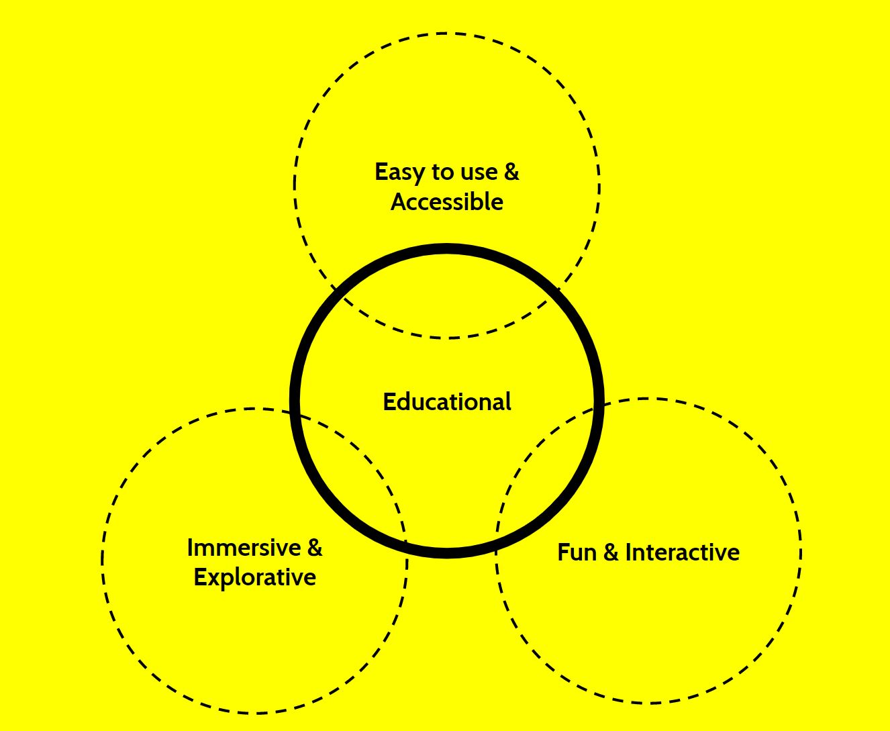

Feedback & Reflection
Research Question
One of the most critical steps to take my project to the next level
is to refine the language of my research question.
"How to educate people with normal vision about vision
impairment?"
is an extensive question. While it offers a lot of different
solutions and possibilities, it is quite impossible to pinpoint what
exactly I want to achieve through my project. There are three
aspects of this problem that I seek to specify:
- Audiences: Who am I trying to educate? Why them?
-
Educate: How do I want to educate them? Through what
media? What do I wish to teach them about? Is it about raising
awareness and the prevention of vision impairment, or am I
aiming to reduce the misconception, false sympathy, stereotypes,
and lack of understanding of the vision-impaired population?
-
Vision impairment: There are so many types of vision
impairments out there, which type am I focusing on? Why that one
particularly? Based on the precedents, it seems like many of
them focuses on complete blindness or color blind. However, I
think it is important to note that many people suffering from
vision loss experiences multiple types of vision impairment.
“Being creative is often like being a blind person. We are dealing
with a problem that we cannot see. We talk about it, we look at
it, and then we try to solve it understanding only the parts that
we can see. The problem is that we can get in a rut and start
seeing the same problem and offering the same solution.”
-
by Stuart Silverstein: Changing Perspective: A New Look at Old
Problems
This quote really made me think about the ways I should refine my
question - how to approach this topic without only tackling at the
surface level? If I am aiming to reduce the stereotypes, false
sympathy, or prejudices towards the vision impaired population, how
can I make sure I can avoid these altogether during the process?
With these questions in mind, I have generated some approaches to my
research question as well as a potential specific question:
-
Speak to blind people, engage the vision impaired population as
much as possible.
-
How to reduce false sympathy, stereotypes, and ignorance towards
blindness?
- How to raise awareness and educate users about glaucoma?
-
How to educate users about the prevention of Age-Related Macular
Degeneration, the leading cause of impairment of reading for the
elderlies?
Precedents: What hasn't been thought about and why?

This diagram consists of the qualities I appreciated from the
precedents I looked into. While trying to create a balance between
accessibility, immersive and interactiveness, I would like to put an
emphasis on the educational aspect. Looking at the precedents there
are some patterns I’ve noticed:
- Educational, but not accessible:
Real-world experiences such as Dialogue in the Dark or Dark Dining
can be very educational since it provides direct interaction with
vision impaired population and limited vision environment.
However, it is a very limited form due to its requirement of being
present physically.
- Education, but not so fun:
Usually does not generate interest for people with normal vision,
only people who are working in the field that relates to or
includes vision-impaired population would use these tools. Fun,
but negative connotation; Most games that involve limited vision
are always related to horror, thriller or mystery. Even though
games are appealing to normal vision population, is there a way to
incorporate educational elements?
- Fun AND Educational:
I realized
colorblindness
finds great success in terms of balancing both fun and educational
aspect while researching precedents. There are various forms of
games that is related to colorblindness are extremely educational
but also allows player interaction. I believe color blind is one
of the easier vision impairment that can be directly visualized
digitally with higher accuracy. The technology can easily simulate
the challenges of people with colorblindness may face in their
lives. It is also a type of vision impairment that does not
necessarily involve complete vision loss, therefore it is easily
to visualize it digitally.
“Games are only effective if people play them”
One of the feedback I have received from the critics made me realize
a loophole in my research question. If my end goal is to educate the
seeing population,
how do I attract this population of normal vision in the first
place?
I only found out about these precedents because I intended to work
with vision impairment. Most people with normal vision would not
take the initiative to engage a topic like this. Then, I remembered
my experience with Dialogue in the Dark: I had no idea what it was
about but it sounded interesting and exciting. I believe a huge part
of making a successful project in this context is to create some
sort of mystery that would ignite audiences’ curiosity and allow
them to be explorative.